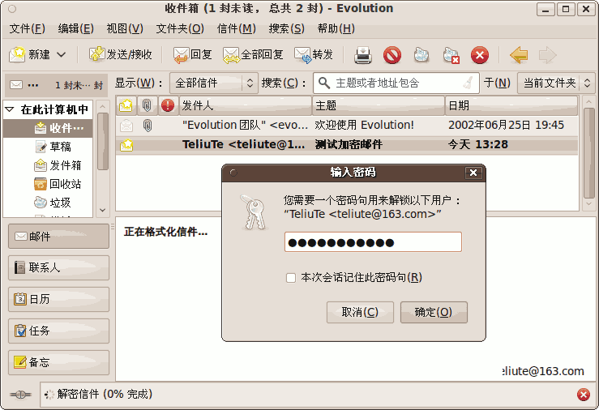
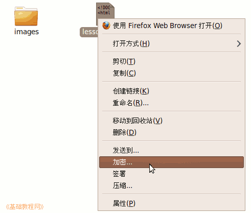

Ubuntu/GNOME 桌面程序指南
作者：TeliuTe 来源：基础教程网
六十三、密码和加密密钥 返回目录 下一课在这里，您可以创建自己的密钥，并用它来加密/解密文件和邮件；
1、密码和加密密钥
1）点菜单“应用程序 - 附件 - 密码和加密密钥”，打开窗口，新版12.04的参考：http://teliute.org/linux/TeUbt/lesson59/lesson59.html
2）窗口中包含系统密码和个人密钥，以及其他密钥；
3）点菜单“文件 - 新建”，打开创建密钥对话框；
4）在出来的密钥类型中，选 PGP 密钥，然后点“继续”；
5）输入自己的邮件用户名，邮箱地址点“创建”；
6）输入密钥的密码，这个密码用于解密的时候；
7）回到主窗口，在“我的个人密钥”中，就有了这个密钥；
8）选中密钥，点工具栏上的“属性 - 细节”可以查看密钥信息，点“导出”备份一下，是一个.asc文件；
9）在发送邮件时，可以用这个密钥来加密或签名，点“安全”菜单，打勾 PGP 加密；
10）收到以后，必须要用这个密钥的密码来解密，然后才能查看邮件；

11）加密时不需要这个密码，因此您可以把密钥中的公钥部分，在“编辑 - 首选项”中公开，
公布到网络中后，别人可以用它来加密发给你的邮件，你可以用密钥中的私钥来解；
12）然后点菜单“远程 - 同步并发行密钥”；
13）在出来的面板中，点“同步”；
14）加密文件需要安装 seahorse-plugins 然后在文件上点右键，选 加密/解密；

本节学习了密码和加密密钥的基础知识，如果你成功地完成了练习，请继续学习下一课内容；
本教程由86团学校TeliuTe制作|著作权所有
基础教程网：http://teliute.org/
美丽的校园……
转载和引用本站内容，请保留版权信息和本站链接。